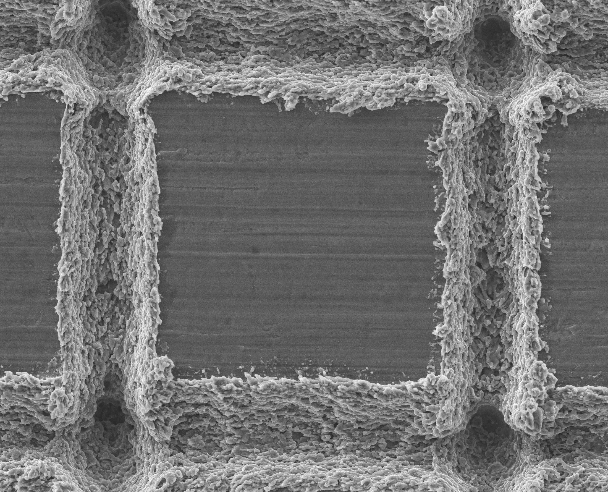
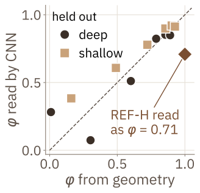
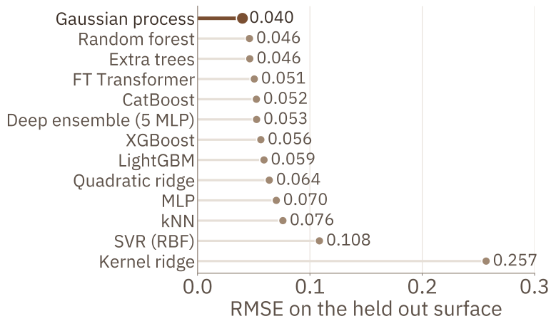
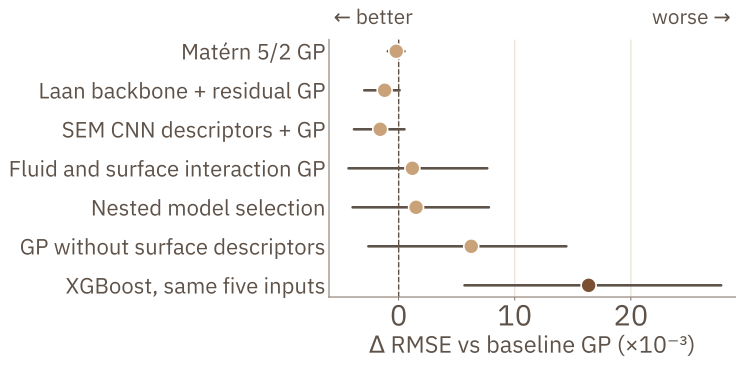
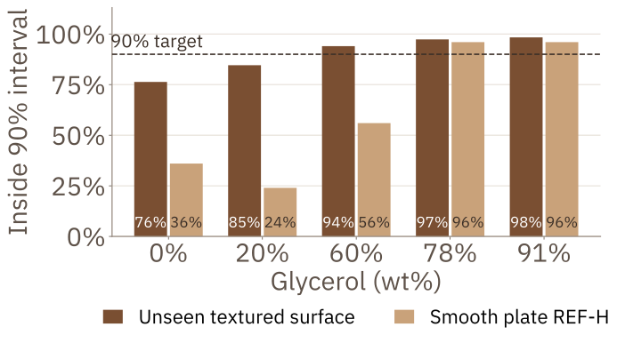
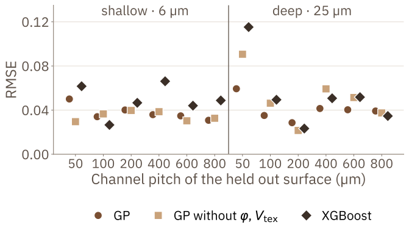
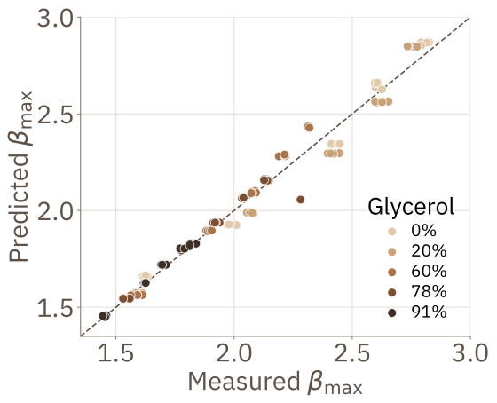

Introduction
1Background and objective
Machine learning models for droplet spreading are usually validated on random splits of the data, so every test surface also appears in training [2]. Surface design needs the reverse: a reliable prediction for a surface that has not yet been made.
Methods
2Surface descriptors from SEM
Between the laser tracks, the surface is flat and looks like the smooth plate. We measured the track width w on SEM images (about 45 µm for deep tracks and 30 µm for shallow ones) and used it to define two descriptors for each surface:
Here φ is the flat area fraction. It ranges from 0.01 (D50) to 0.93 (S800), and the smooth plate REF-H has φ = 1. Coding surfaces by channel spacing and depth instead shifted the REF-H error by up to 0.022. With φ, a 10 µm change in track width shifts it by 0.005 at most.



3Reading descriptors directly from images

4Dimensionless inputs
Our recomputed Re and We agree with the dataset to within 5×10−7. The Ohnesorge number follows from Re and We, so we did not add it. The scaling law of Laan et al. [3], with P = We Re−2/5, was developed for wettable surfaces. On this data it gives R² = 0.71, with an average error of 11% on held out surfaces.
5Evaluation
Every impact condition was repeated about five times. A random split would place repeats of the same condition in both training and test sets, so we used:
Model inputs are ln Re, ln We, ln D0, φ and Vtex, and the target is ln βmax. We kept a change only if its 95% confidence interval, from 4,000 bootstrap resamples of whole surfaces, excluded zero.
Results
6Comparison of 13 models

7Variants tested

Bars show 95% confidence intervals from paired bootstrap over surfaces. Adding a Laan law backbone, changing the kernel, nested model selection and CNN descriptors each changed the error by less than 0.002. XGBoost was the only significant difference, and it was worse. Removing φ and Vtex raised the error from 0.040 to 0.046. We therefore kept the plain GP.
8Prediction intervals

9Error for each held out surface

D50 (φ = 0.01, the edge of the range) has the largest error for every model. The descriptors lower it from 0.091 to 0.059 but slightly raise the error on S50 and D200. With 12 surfaces, this is suggestive only.
10Smooth plate REF-H

Future work
- Measure advancing and receding contact angles for each fluid and surface pair and use them as inputs.
- Make the noise level depend on the Ohnesorge number.
- Add new surfaces, with a test set fixed before any tuning.